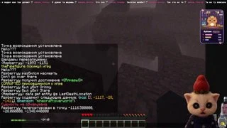

5:45:30配信だより / 第 01 号
みんな、
にゃー！
ターニャことaspberryの配信タイトルには「сем мяу!」という猫の挨拶が登場します。愛猫はブーブリク。チャットには、誰かをハグするコマンドもあります。
初配信16.05.24
フォロワー（11月4日時点）1,646
配信言語ロシア語
01 プロフィール帳
ターニャのこと
「✧ привет, я Таня ✧」
「こんにちは、ターニャです」― チャンネル紹介より
初配信は2024年5月16日。その15日後、ターニャはTwitchアフィリエイトになりました。2026年4月には、フォロワーが初めて1,000人に届いた日も、チャンネルの紹介欄に書き加えました。
同じ紹介欄には、愛猫ブーブリクのこと、好きな水色と紫、それにピエロのジョークまで並んでいます。応援を考えている人には、まず自分のためにお金を取っておいてね、とひと言。そんなところに人柄がにじみます。
ターニャの誕生日3月7日生まれ・うお座
02 配信アーカイブ
もう一度、あの場面
ゆっくり過ごせる夜には配信を一本。少しだけのぞきたいときは、視聴者が切り取ったクリップをどうぞ。
✦ 特別な一本
03 ゲームの棚
Steamプロフィール配信のあとで
11月4日の配信は『マインクラフト』。同じ日にチャンネルからリンクされたSteamのプロフィールを見ると、最近プレイしたゲームにはこの3本が並んでいました。
04 チャットの窓辺
ブーブリクとおしゃべり
回線の安定を祈るコマンドまであります。気になるコマンドを選ぶと意味が読めます。コピーしてTwitchのチャットで使ってみてください。
TWITCH / ASPBERRY
ブーブリクのコマンド帳
!обнятьチャットにいる誰かをランダムにハグします。
チャットのコマンド集
!обнять- チャットにいる誰かをランダムにハグします。
!феечка- 自分が「ウィンクス」のどの妖精か占えます。
!инет- 回線が安定するように、みんなでお祈り。
!очередь- みんなで見る予定の作品を確認できます。
!tg- ターニャのTelegramへのリンク。
!ds- Discordへの招待リンク。
!ущипнуть- 誰かをランダムに、冗談でつねります。
!любовь ник- ニックネームを入れて相性を占います。
!iq- お遊びのIQチェック。
!пиво- ランダムに選んだ相手と、チャットで乾杯。
!писюнчик- 大人向けのジョークコマンド。
!команды- ブーブリクが使えるコマンドの一覧。
!!!текст- メッセージの読み上げ。サブスク登録者、VIP、モデレーター向け。
気持ちよく話すために
- ターニャとほかの視聴者を大切に。中傷、差別、脅迫、嫌がらせ、政治に関する話題は控えてください。
- ネタバレや攻略のヒントは、本人がお願いしたときに。スパムはBANの対象です。自分や他の配信者の宣伝も控えてください。
- もめごとに加わった人は3分間ミュートされます。禁止コンテンツの投稿にはタイムアウト、BAN、VIP解除などの措置があり、最終判断はモデレーターが行います。
ターニャの配信環境
ノートPCはThunderobot 911 Air Wave D。Intel Core i5-11400H（2.70 GHz）、メモリ16 GB、NVIDIA GeForce RTX 3050 Laptop GPUを搭載。
次の「にゃー」まで
チャットで会いましょう
配信はTwitchで。配信の合間もTelegramやDiscordでつながれます。
ターニャを応援する
応援は無理のない範囲で。まず自分に必要なお金を大切に、というのがターニャからのお願いです。